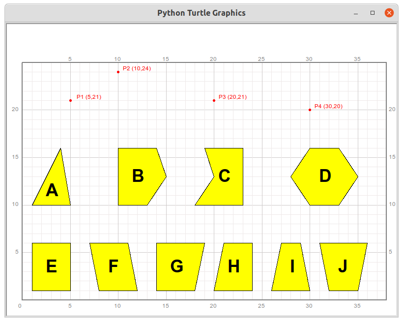

第19讲 重新认识矩形¶
Problem 问题描述¶
Each point on an axis can be represented by a value, and larger value will be located in righter part of the axis. Similarly, an ordered value pair (x, y) can be used to locate a point in a two dimensional plane. For example, the following 4 points P1, P2, P3, and P4 correspond to the following 4 value pairs: (5, 21), (10, 24), (20, 21), and (30, 20) . The first value in the pair indicates the horizontal position of the point in a plane, and the second value indicates the vertical position. Such an ordered value pair is called coordinate value of a point. For example, the coordinate value of the point P3 is (20, 21).
数轴上的每一个点都可以用一个数来表示，越大的数值对应的点处在数轴的越右侧。类似的，平面上的一个点可以用有序的两个数（称为有序数对）来分别表示这个点在平面中左右和上下的位置程度。例如下图中的4个点P1,P2,P3,和P4分别对应下面4个用括号括起来的有序数对:(5, 21), (10, 24), (20, 21), 和(30, 20)。每一个有序数对的第一个数字表示这个点在平面中的左右位置程度，数字越大表示越靠近平面的右侧；有序数对中的第二个数字表示这个点在平面中的上下位置程度，数字越大表明越靠上方。这样的一个有序数对称为平面上某一个点的坐标。例如下图中点P3的坐标为(20, 21)。

A polygon is a plane figure that can be formed by connecting and closing a finite number of points in order. For example, figure E, which is a rectangle, is formed by 4 points whose coordinate values are (1, 1), (5, 1), (5, 6), (1, 6), if counted from the bottom left point and anti-clockwisely. The 4 coordinate values can be put into a list variable like:
一个多边形可以看成是平面上一定数量的点按照次序依次且闭合连接起来形成的。例如，下图中的图E是一个长方形（又称矩形），围成这个矩形的四个点的坐标从左下角的定点开始逆时针方向算分别为(1, 1), (5, 1), (5, 6), (1, 6)。把这4个点的坐标放在一个shape变量里就形成了:
shape = [(1, 1), (5, 1), (5, 6), (1, 6)]
That being said, the variable shape is corresponding to the Rectangle(Figure E). In fact, each polygon in the following picture can be represented by a list variable like the following:
也就是说，这个shape变量就对应了下图中的长方形(图E)。事实上，下图中的每一个多边形都可以用一个包含多个点的坐标的列表型变量来表示。这些变量可能的值如下：
shape1_points = [(32, 1), (35, 1), (36, 6), (31, 6)]
shape2_points = [(8, 1), (12, 1), (11, 6), (7, 6)]
shape3_points = [(26, 1), (30, 1), (29, 6), (27, 6)]
shape4_points = [(20, 1), (24, 1), (24, 6), (21, 6)]
shape5_points = [(18, 10), (23, 10), (23, 16), (19, 16), (20, 13)]
shape6_points = [(1, 1), (5, 1), (5, 6), (1, 6)]
shape7_points = [(1, 10), (5, 10), (4, 16)]
shape8_points = [(10, 10), (13, 10), (15, 13), (14, 16), (10, 16)]
shape9_points = [(14, 1), (18, 1), (19, 6), (14, 6)]
shape10_points = [(30, 10), (33, 10), (35, 13), (33, 16), (30, 16), (28, 13)]
We knew that variable shape6_points refers to the polygon E. all other polygons in the picture are not a rectangle. 我们已经知道变量shape6_points对应多边形E。图中除了E之外的所有其他多边形都不是矩形。
Please: 请你：
Find the corresponding polygons that are represented by each list variable above. 找出剩余9个列表型变量分别对应哪个字母表示的多边形；
Observe the number of elements(coordinate value) and the relationship between adjacent elements of a list variable that represents a rectangle. Write down your observation in words. 观察对应与一个矩形的列表型变量的元数个数，相邻元素的值有什么关系，用文字描述你观察到的关系。
Declare and implemented a method named
is_rectangle_along_axisesto tell whether a list variable whose elements are coordiante value is representing a rectangle whose sides are parrallel to the axises. Let the method returnsTrueif the answer is Yes, andTrueotherwise. 编写一个方法is_rectangle_along_axises来判定一个形如上面格式的列表型变量是否对应一个各边平行于坐标轴的矩形。如果是，该方法返回True,否则返回False。
def is_rectangle_along_axises(shape_points):
result = False
#TODO: add your code here
return result
Note: The picture above was generated by the following codes with some methods newly implemented in the library qianglib. Please go to the file “qianglib.py” for more details of the library.
[ ]:
from turtle import setup, reset, pu, pd, bye, left, right, fd, bk, screensize
from turtle import goto, seth, write, ht, st, home, dot, pen, speed
from qianglib import prepare_paper, draw_grid, mark, lines, line, polygon, text
[ ]:
width, height = 800, 600
setup(width, height, 0, 0)
prepare_paper(width, height, scale=20, min_x=0, min_y=0, max_y=25)
[ ]:
mark((5,21), "P1 (5,21)", size=5, offset=2)
mark((10,24), "P2 (10,24)", size=5, offset=2)
mark((20,21), "P3 (20,21)", size=5, offset=2)
mark((30,20), "P4 (30,20)", size=5, offset=2)
[ ]:
quadrilateral1 = [(10, 10), (25, 12), (27, 18), (12, 20)]
polygon(quadrilateral1, fillcolor="yellow")
[ ]:
square1 = [(15, 2), (22, 2), (22, 9), (15, 9)]
polygon(square1, fillcolor="green")
[ ]:
square2 = [(15, 5), (25, 10), (20, 20), (10, 15)]
polygon(square2, fillcolor="green")
[ ]:
quadrilateral1 = [(15, 5), (25, 10), (20, 20), (10, 15)]
polygon(square1, fillcolor="green")
[ ]:
rectangle = [(1, 1), (5, 1), (5, 6), (1, 6)]
polygon(rectangle, fillcolor="red")
[ ]:
shape2 = [(1, 1), (5, 6), (5, 1), (1, 6)]
polygon(shape2, fillcolor="yellow")
[ ]:
line((1, 1), (5, 1), color="red", linewidth=2)
line((5, 1), (5, 6), color="red")
line((5, 6), (1, 6), color="red")
[ ]:
line((1, 1), (5, 2), color="green")
[ ]:
shape1_points = [(32, 1), (35, 1), (36, 6), (31, 6)]
shape2_points = [(8, 1), (12, 1), (11, 6), (7, 6)]
shape3_points = [(26, 1), (30, 1), (29, 6), (27, 6)]
shape4_points = [(20, 1), (24, 1), (24, 6), (21, 6)]
shape5_points = [(18, 10), (23, 10), (23, 16), (19, 16), (20, 13)]
shape6_points = [(1, 1), (5, 1), (5, 6), (1, 6)]
shape7_points = [(1, 10), (5, 10), (4, 16)]
shape8_points = [(10, 10), (13, 10), (15, 13), (14, 16), (10, 16)]
shape9_points = [(14, 1), (18, 1), (19, 6), (14, 6)]
shape10_points = [(30, 10), (33, 10), (35, 13), (33, 16), (30, 16), (28, 13)]
shapes = [shape1_points, shape2_points, shape3_points, shape4_points, shape5_points,
shape6_points, shape7_points, shape8_points, shape9_points, shape10_points
]
[ ]:
for shape in shapes:
polygon(shape, fillcolor="yellow")
[ ]:
font=("arial", 24, "bold")
text((2.5, 10.5), "A", font=font, color="black")
text((11.5, 12), "B", font=font, color="black")
text((20.5, 12), "C", font=font, color="black")
text((31, 12), "D", font=font, color="black")
text((2.5, 2.5), "E", font=font, color="black")
text((9, 2.5), "F", font=font, color="black")
text((15.5, 2.5), "G", font=font, color="black")
text((21.5, 2.5), "H", font=font, color="black")
text((28, 2.5), "I", font=font, color="black")
text((33, 2.5), "J", font=font, color="black")
Answer Area
[ ]:
shape6_points = [(1, 1), (5, 1), (5, 6), (1, 6)]
result_for_shape6 = is_rectangle_along_axises(shape6_points)
print(result_for_shape6)
[ ]:
shape6_another_points = [(1, 1), (1, 6), (5, 6), (5, 1)]
result_for_shape62 = is_rectangle_along_axises(shape6_another_points)
print(result_for_shape62)
[ ]:
print(is_rectangle_along_axises(shape7_points))
[ ]:
for shape in shapes:
result_for_cur_shape = is_rectangle_along_axises(shape)
print(result_for_cur_shape)
[ ]:
rectangles = [
[(1, 1), (5, 1), (5, 6), (1, 6)],
[(30, 0), (35, 0), (35, 4), (30, 4)],
[(10, 0), (20, 5), (15, 15), (5, 10)],
[(20, 0), (25, 0), (25, 5), (20, 5)]
]
for rectangle in rectangles:
result = is_rectangle_along_axises(rectangle)
print(result)
print(rectangle)
polygon(rectangle, fillcolor="red")
[ ]:
# DO NOT MODIFY THIS CODE
# This cell is only for testing the method you implemented above
test_shapes = [
[]
]
expected_results = [
]
results = []
passed = True
for shape in shapes:
results.append(is_rectangle_along_axises(shape))
for i, result in enumerate(results):
if (result == True and i != 5) or (result == False and i == 5):
passed = False
print("Your method didn't pass the test")
if passed is True:
print("Your method passed the test. Actually, it does't say the method is correct.")
Math Background 数学背景¶
平面上点的坐标表示
矩形的基本性质
平行于坐标轴的矩形其顶点坐标的特点
如何用点的坐标描述一个多边形
Prerequisites 预备知识¶
简单介绍
qianglib库
Solution 编程求解¶
[ ]:
# answer for question 1
# shape6_points -> E
# Replace ? with A,B,C,D,F,G,H,I, or J.
# shape1_points -> ?
# shape2_points -> ?
# shape3_points -> ?
# shape4_points -> ?
# shape5_points -> ?
# shape7_points -> ?
# shape8_points -> ?
# shape9_points -> ?
# shape10_points -> ?
[ ]:
# answer for question 2
# The number of a list variable which represents a rectangle is always ____ 。(write a number here)
# The relationship between the coordinate values are: ___________________________ (write your observation here)
[ ]:
# answer for question 3
def is_rectangle_along_axises(shape_points):
result = False
if len(shape_points) != 4:
print("It's not a shape with 4 points")
pass
else:
x0, y0 = shape_points[0] # the first point
x1, y1 = shape_points[1]
x2, y2 = shape_points[2]
x3, y3 = shape_points[3]
if y0 == y1 and x1 == x2 and y2 == y3 and x3 == x0:
result = True
if x0 == x1 and y1 == y2 and x2 == x3 and y3 == y0:
result = True
return result
Summary 知识点小结¶
平面直角坐标系上点的坐标可以用
tuple类型的数据来表示复习
tuple和list类型的区别巩固方法的创建，包括返回值
矩形的特点以及四边平行于坐标轴的矩形的坐标判定方法
计算机小知识¶
暂缺
Assignments 作业¶
熟悉
prepare_paper方法：导入qianglib.py，调用prepare_paper方法，修改该方法接受的参数值，使得scale值分别为10和50，min_x分别为0，10，min_y分别为0, 20，组合不同的这些参数值调用该方法。观察绘制出的方格值有什么变化，从中试图小结个该方法这些参数的意义。 Your Answer:scale的意义:
min_x的意义:
min_y的意义:
[ ]:
# 你需要预先从turtle和qianglib库中导入需要的方法
weight, height = 800, 600
setup(weight, height, 0, 0)
[ ]:
prepare_paper(width, height, scale=10, min_x=0, min_y=0)
[ ]:
prepare_paper(width, height, scale=10, min_x=0, min_y=20, max_y=25)
[ ]:
prepare_paper(width, height, scale=10, min_x=10, min_y=0, max_y=25)
[ ]:
prepare_paper(width, height, scale=10, min_x=10, min_y=20, max_y=25)
[ ]:
prepare_paper(width, height, scale=50, min_x=0, min_y=0, max_y=25)
[ ]:
prepare_paper(width, height, scale=50, min_x=0, min_y=20, max_y=25)
[ ]:
prepare_paper(width, height, scale=50, min_x=10, min_y=0, max_y=25)
[ ]:
prepare_paper(width, height, scale=50, min_x=10, min_y=20, max_y=25)
使用本讲示例的代码调出绘图纸。下面以供给出了5组数据，每一组数据包括两个点的坐标。 对于每一组数据：
请在绘图纸上使用
qianglib中的mark方法标记这两个点，用
qianglib方法中的line方法连接这两个点成一条线段。手工找到线段的中点，用
mark方法标记该中点。
以端点坐标表示的线段
(0, 0)和(20, 0)
(0, 0)和(0,16)
(0, 0)和(20, 16)
(10, 20)和(30, 20)
(10, 20)和(35, 25)
[ ]:
# A.
points = [(0, 0), (20, 0)]
for point in points:
mark(point, info=str(point))
center = (10, 0)
mark(center, info=str(center))
[ ]:
# B.
[ ]:
# E.
points = [(10, 20), (35, 25)]
for point in points:
mark(point, info=str(point))
center = (25, 22)
mark(center, info=str(center))
line(points[0], center)
[ ]:
line(center, points[1])
[ ]:
line(points[0], points[1])
以上一题为参考，编写一个方法专门计算一条线段中点的坐标，这条线段以两个点的坐标的形式给出，方法返回线段中点的坐标。该方法的定义如下，请完整的实现该方法。
[ ]:
def line_center(point1, point2): # point1, poit2 format of (x1, y1)
# center = None
# TODO: add your codes here
x1, y1 = point1
x2, y2 = point2
print("x1:{}, y1:{}".format(x1, y1))
print("x2:{}, y2:{}".format(x2, y2))
center_x = (x1 + x2)/2
center_y = (y1 + y2)/2
print("center x: {}, y:{}".format(center_x, center_y))
center = (center_x, center_y)
return center
[ ]:
def line_center2(point1, point2):
return ((point1[0]+point2[0])/2, (point1[1] + point2[1])/2)
[ ]:
C = line_center(A, B) # C is center of line AB
[ ]:
mark(C, info="C", color="blue", size=10)
[ ]:
D = line_center2(A, B)
print(D)
mark(D, info="D", color="black", size=10)
write a method to find tow points on a line that divide the line into 3 equal parts.
[1]:
from turtle import setup, reset, pu, pd, bye, left, right, fd, bk, screensize
from turtle import goto, seth, write, ht, st, home, dot, pen, speed
from qianglib import prepare_paper, draw_grid, mark, lines, line, polygon, text
[2]:
width, height = 800, 600
setup(width, height, 0, 0)
prepare_paper(width, height, scale=20, min_x=0, min_y=0, max_y=25)
[3]:
A = (10, 12)
B = (25, 21)
mark(A, info="A(10, 12)")
mark(B, info="B(25, 21)")
line(A, B)
[4]:
def method_name(point1, point2):
point3 = None
point4 = None
# TODO: add your codes here.
return [point3, point4]
[5]:
result_list = method_name(A, B)
E = result_list[0]
F = result_list[1]
E = (15, 15) # guess
F = (20, 18) # guess
[6]:
mark(E)
mark(F)
line(A, E, color="yellow", linewidth=5)
line(E, F, color="red", linewidth=5)
line(F, B, color="blue", linewidth=5)
[7]:
# Example 2
P1 = (10, 5)
P2 = (25, 5)
mark(P1)
mark(P2)
P3 = (15, 5) # claculated by your method
P4 = (20, 5) # claculated by your method
line(P1, P3, color="yellow")
line(P3, P4, color="red")
line(P4, P2, color="blue")
[8]:
mark(P3, "P3(15, 5)")
mark(P4, "P4(20, 5)")
[ ]:
[9]:
P5 = (5, 12)
P6 = (5, 21)
P7 = (5, 15)
P8 = (5, 18)
line(P5, P7, color="yellow")
line(P7, P8, color="red")
line(P8, P6, color="blue")
mark(P7)
mark(P8)
[ ]: